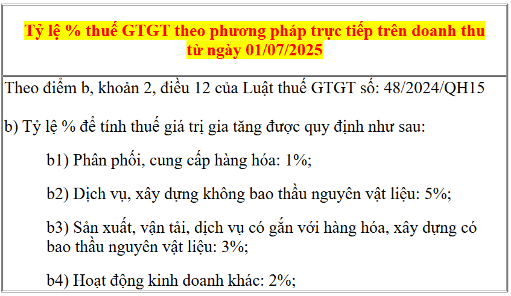

Tỷ lệ % thuế GTGT theo phương pháp trực tiếp? Thuế suất thuế GTGT theo phương pháp trực tiếp? Danh mục ngành nghề tính thuế GTGT theo tỷ lệ % trên doanh thu theo pp trực tiếp? Kế toán Diệu Tâm xin trích văn bản cụ thể về vấn đề này:

Ngày 01/7/2025, Bộ trưởng Bộ Tài chính ban hành Thông tư 69/2025/TT-BTC quy định chi tiết một số điều của Luật Thuế giá trị gia tăng 2024 và hướng dẫn thực hiện Nghị định 181/2025/NĐ-CP quy định chi tiết thi hành một số điều của Luật Thuế giá trị gia tăng.
Thông tư 69/2025/TT-BTC có hiệu lực thi hành từ ngày 01 tháng 7 năm 2025, thay thế Thông tư số 219/2013/TT-BTC
Trong thông tư 69/2025/TT-BTC có ban hành kèm theo Tỷ lệ % thuế GTGT theo phương pháp trực tiếp trên doanh thu như sau:
Trong thông tư 69/2025/TT-BTC có ban hành kèm theo Tỷ lệ % thuế GTGT theo phương pháp trực tiếp trên doanh thu như sau:
PHỤ LỤC I
NHÓM HÀNG HÓA, DỊCH VỤ THUỘC ĐỐI TƯỢNG ÁP DỤNG THEO TỶ LỆ % ĐỂ TÍNH THUẾ GIÁ TRỊ GIA TĂNG
(Kèm theo Thông tư số 69/2025/TT-BTC ngày 01 tháng 7 năm 2025 của Bộ trưởng Bộ Tài chính)
| Stt | Danh mục nhóm hàng hóa, dịch vụ | Tỷ lệ % tính thuế GTGT |
| 1 |
Phân phối, cung cấp hàng hóa theo quy định tại điểm b1 khoản 2 Điều 12 Luật Thuế giá trị gia tăng a) Hoạt động bán buôn, bán lẻ các loại hàng hóa (trừ giá trị hàng hóa đại lý bán đúng giá hưởng hoa hồng). b) Khoản thưởng, hỗ trợ đạt doanh số, khuyến mại, chiết khấu thương mại, chiết khấu thanh toán, chi hỗ trợ bằng tiền hoặc không bằng tiền cho hộ khoán. |
1% |
|
2 |
Dịch vụ, xây dựng không bao thầu nguyên vật liệu theo quy định tại điểm b2 khoản 2 Điều 12 Luật Thuế giá trị gia tăng a) Dịch vụ lưu trú gồm: Hoạt động cung cấp cơ sở lưu trú ngắn hạn cho khách du lịch, khách vãng lai khác; hoạt động cung cấp cơ sở lưu trú dài hạn không phải là căn hộ cho sinh viên, công nhân và những đối tượng tương tự; hoạt động cung cấp cơ sở lưu trú cùng dịch vụ ăn uống hoặc các phương tiện giải trí. b) Dịch vụ bốc xếp hàng hóa và hoạt động dịch vụ hỗ trợ khác liên quan đến vận tải như kinh doanh bến bãi, bán vé, trông giữ phương tiện. c) Dịch vụ bưu chính, chuyển phát thư tín và bưu kiện. d) Dịch vụ môi giới, đấu giá và hoa hồng đại lý. đ) Dịch vụ tư vấn pháp luật, tư vấn tài chính, kế toán, kiểm toán; dịch vụ làm thủ tục hành chính thuế, hải quan. e) Dịch vụ xử lý dữ liệu, cho thuê cổng thông tin, thiết bị công nghệ thông tin, viễn thông; quảng cáo trên sản phẩm, dịch vụ nội dung thông tin số. g) Dịch vụ hỗ trợ văn phòng và các dịch vụ hỗ trợ kinh doanh khác. h) Dịch vụ tắm hơi, massage, karaoke, vũ trường, bi-a, internet, game. i) Dịch vụ may đo, giặt là; cắt tóc, làm đầu, gội đầu. k) Dịch vụ sửa chữa khác bao gồm: sửa chữa máy vi tính và các đồ dùng gia đình. l) Dịch vụ tư vấn, thiết kế, giám sát thi công xây dựng cơ bản. m) Các dịch vụ khác thuộc đối tượng tính thuế giá trị gia tăng theo phương pháp khấu trừ thuế với mức thuế suất thuế giá trị gia tăng 10%. n) Xây dựng, lắp đặt không bao thầu nguyên vật liệu (bao gồm cả lắp đặt máy móc, thiết bị công nghiệp). o) Cho thuê tài sản gồm: - Cho thuê nhà, đất, cửa hàng, nhà xưởng, kho bãi trừ dịch vụ lưu trú. - Cho thuê phương tiện vận tải, máy móc thiết bị không kèm theo người điều khiển. - Cho thuê tài sản khác không kèm theo dịch vụ. |
5% |
| 3 |
Sản xuất, vận tải, dịch vụ có gắn với hàng hóa, xây dựng có bao thầu nguyên vật liệu theo quy định tại điểm b3 khoản 2 Điều 12 Luật Thuế giá trị gia tăng a) Sản xuất, gia công, chế biến sản phẩm hàng hóa. b) Khai thác, chế biến khoáng sản. c) Vận tải hàng hóa, vận tải hành khách. d) Dịch vụ kèm theo bán hàng hóa như dịch vụ đào tạo, bảo dưỡng, chuyển giao công nghệ kèm theo bán sản phẩm. đ) Dịch vụ ăn uống. e) Dịch vụ sửa chữa và bảo dưỡng máy móc thiết bị, phương tiện vận tải, ô tô, mô tô, xe máy và xe có động cơ khác. g) Xây dựng, lắp đặt có bao thầu nguyên vật liệu (bao gồm cả lắp đặt máy móc, thiết bị công nghiệp). h) Hoạt động khác thuộc đối tượng tính thuế giá trị gia tăng theo phương pháp khấu trừ thuế với mức thuế suất thuế giá trị gia tăng 10%. |
3% |
|
4 |
Hoạt động kinh doanh khác theo quy định tại điểm b4 khoản 2 Điều 12 Luật Thuế giá trị gia tăng a) Hoạt động sản xuất các sản phẩm thuộc đối tượng tính thuế giá trị gia tăng theo phương pháp khấu trừ thuế với mức thuế suất thuế giá trị gia tăng 5%. b) Hoạt động cung cấp các dịch vụ thuộc đối tượng tính thuế giá trị gia tăng theo phương pháp khấu trừ thuế với mức thuế suất thuế giá trị gia tăng 5%. c) Hoạt động khác chưa được liệt kê ở các nhóm 1, 2, 3 nêu trên và điểm a, điểm b khoản này. |
2% |
--------------------------------------------------------------------------------------------
Ví dụ tính thuế GTGT theo phương pháp trực tiếp
- Công ty Diệu Tâm kinh doanh "dịch vụ ăn uống", kê khai theo phương pháp trực tiếp trên doanh thu và kê khai theo quý.
- Trong quý có xuất 100 hóa đơn trực tiếp => Tổng doanh thu là: 100tr
Cách tính thuế GTGT theo pp trực tiếp như sau:
Số thuế GTGT phải nộp = 100tr x 3% (dịch vụ ăn uống chịu thuế suất 3%)
Như vậy số thuế GTGT phải nộp trong quý là: 3.000.000.
-----------------------------------------------------------------------------------------------
Còn trước ngày 01/07/2025 thì danh mục ngành nghề tính thuế GTGT theo tỷ lệ % trên doanh thu được thực hiện theo thông tư 219/2013/TT-BTC như sau
--------------------------------------------------------------------------------
BẢNG DANH MỤC NGÀNH NGHỀ TÍNH THUẾ GTGT THEO TỶ LỆ % TRÊN DOANH THU
(Ban hành kèm theo Thông tư 219/2013/TT-BTC ngày 31/12/2013 của Bộ Tài chính)
(Ban hành kèm theo Thông tư 219/2013/TT-BTC ngày 31/12/2013 của Bộ Tài chính)
1) Phân phối, cung cấp hàng hoá: tỷ lệ 1%
- Hoạt động bán buôn, bán lẻ các loại hàng hóa (trừ giá trị hàng hóa đại lý bán đúng giá hưởng hoa hồng).
2) Dịch vụ, xây dựng không bao thầu nguyên vật liệu: tỷ lệ 5%
- Dịch vụ lưu trú, kinh doanh khách sạn, nhà nghỉ, nhà trọ;
- Dịch vụ cho thuê nhà, đất, cửa hàng, nhà xưởng, cho thuê tài sản và đồ dùng cá nhân khác;
- Dịch vụ cho thuê kho bãi, máy móc, phương tiện vận tải; Bốc xếp hàng hoá và hoạt động dịch vụ hỗ trợ khác liên quan đến vận tải như kinh doanh bến bãi, bán vé, trông giữ phương tiện;
- Dịch vụ bưu chính, chuyển phát thư tín và bưu kiện;
- Dịch vụ môi giới, đấu giá và hoa hồng đại lý;
- Dịch vụ tư vấn pháp luật, tư vấn tài chính, kế toán, kiểm toán; dịch vụ làm thủ tục hành chính thuế, hải quan;
- Dịch vụ xử lý dữ liệu, cho thuê cổng thông tin, thiết bị công nghệ thông tin, viễn thông;
- Dịch vụ hỗ trợ văn phòng và các dịch vụ hỗ trợ kinh doanh khác;
- Dịch vụ tắm hơi, massage, karaoke, vũ trường, bi-a, internet, game;
- Dịch vụ may đo, giặt là; Cắt tóc, làm đầu, gội đầu;
- Dịch vụ sửa chữa khác bao gồm: sửa chữa máy vi tính và các đồ dùng gia đình;
- Dịch vụ tư vấn, thiết kế, giám sát thi công xây dựng cơ bản;
- Các dịch vụ khác;
- Xây dựng, lắp đặt không bao thầu nguyên vật liệu (bao gồm cả lắp đặt máy móc, thiết bị công nghiệp).
3) Sản xuất, vận tải, dịch vụ có gắn với hàng hoá, xây dựng có bao thầu nguyên vật liệu: tỷ lệ 3%
- Sản xuất, gia công, chế biến sản phẩm hàng hóa;
- Khai thác, chế biến khoáng sản;
- Vận tải hàng hóa, vận tải hành khách;
- Dịch vụ kèm theo bán hàng hóa như dịch vụ đào tạo, bảo dưỡng, chuyển giao công nghệ kèm theo bán sản phẩm;
- Dịch vụ ăn uống;
- Dịch vụ sửa chữa và bảo dưỡng máy móc thiết bị, phương tiện vận tải, ô tô, mô tô, xe máy và xe có động cơ khác;
- Xây dựng, lắp đặt có bao thầu nguyên vật liệu (bao gồm cả lắp đặt máy móc, thiết bị công nghiệp).
4) Hoạt động kinh doanh khác: tỷ lệ 2%
- Hoạt động sản xuất các sản phẩm thuộc đối tượng tính thuế GTGT theo phương pháp khấu trừ với mức thuế suất thuế GTGT 5%;
- Hoạt động cung cấp các dịch vụ thuộc đối tượng tính thuế GTGT theo phương pháp khấu trừ với mức thuế suất thuế GTGT 5%;
- Các hoạt động khác chưa được liệt kê ở các nhóm 1, 2, 3 nêu trên.
==========================================
Kế toán Diệu Tâm chúc các bạn thành công!
Bạn muốn học làm kế toán thuế, kê khai thuế tháng/quý, xử lý chi phí được trừ - không được trừ; Kê khai - Quyết toán thuế cuối năm....
có thể tham gia: Khóa học kế toán thuế thực tế chuyên sâu
Bạn muốn học làm kế toán thuế, kê khai thuế tháng/quý, xử lý chi phí được trừ - không được trừ; Kê khai - Quyết toán thuế cuối năm....
có thể tham gia: Khóa học kế toán thuế thực tế chuyên sâu
-----------------------------------------------------------------------------------------------------